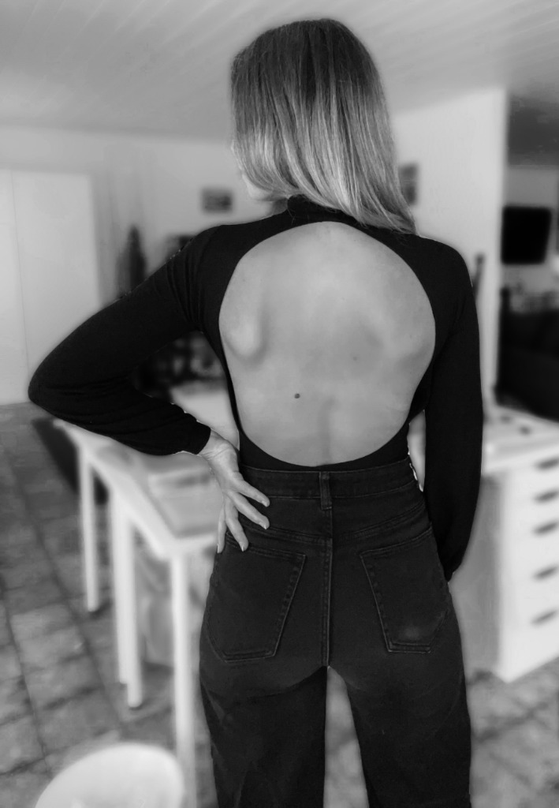

Meine Geschichte


Ich habe in einer Kita gearbeitet und war absolut begeistert von den individuell genähten Kleidungsstücken der Kinder. Es war einfach unglaublich süß und so einzigartig.
Seit 2018 verwandle ich diese Inspiration in mein eigenes Label. Jedes Stück, das mein Atelier verlässt, wurde von Hand gefertigt.